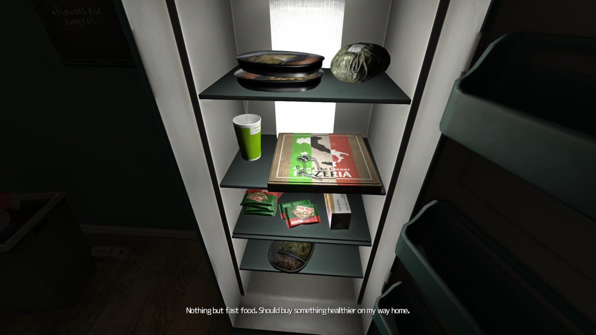
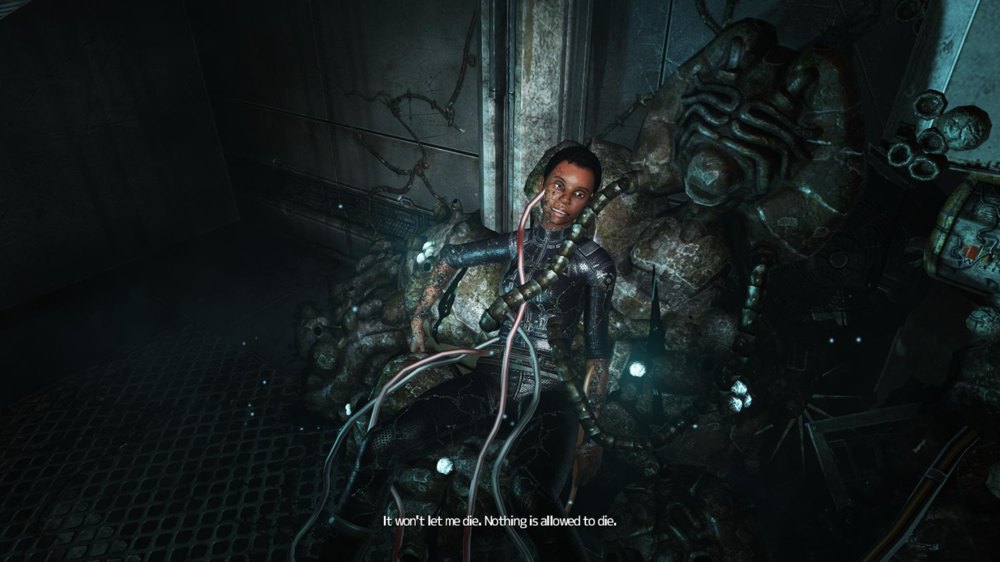
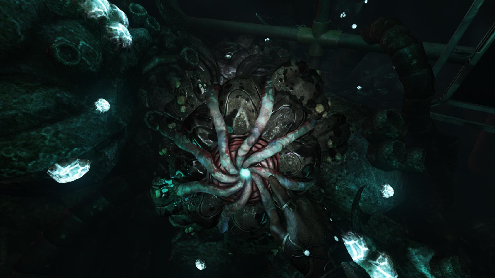
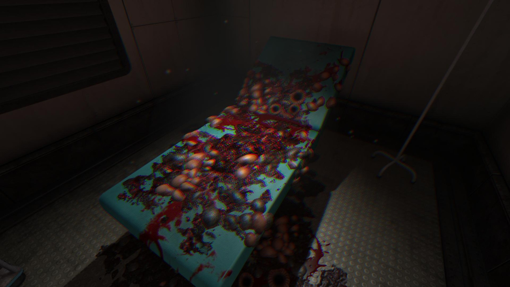
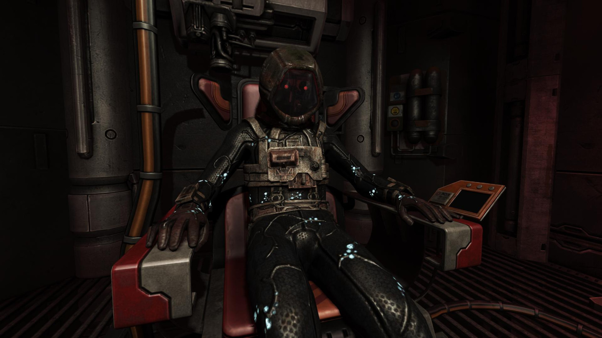

Шведские разработчики из Frictional Games уже больше восьми лет являются одними из главных поставщиков «кирпичей» для игрового комьюнити. И Penumbra, и Amnesia остались в нашей памяти как проекты глубоко атмосферные, оригинальные и жуткие. В SOMA девелоперы занялись любимым делом в непривычных для себя условиях — они решили проверить, как традиционные методы «устрашения» приживутся на почве научно-фантастического сеттинга.

На обратном пути надо обязательно купить шаурму…Он — обычный канадский парень Саймон Джаррет, работник книжного магазина, получивший черепно-мозговую травму в автомобильной аварии. На повестке дня — посещение доктора и процедура сканирования мозга. Незатейливая болтовня по телефону, чтение электронной почты, поездка в метро, прогулка по пустому больничному коридору… Парочка тривиальных сцен — и чувство присутствия уже достигнуто. Последующие события, по большему счёту, никак не связаны с описанной будничной картиной. Однако именно такая завязка обеспечивает игре интригу на добрую половину прохождения. Через мгновение после сканирования мозга герой обнаруживает себя в безлюдной лаборатории, находящейся на дне океана. Что это — падение в глубины своего подсознания или неизвестное стечение внешних обстоятельств, которые были попросту забыты Джарретом?

Так жить нельзя, но если очень хочется, то можно.SOMA — визуализированный мысленный эксперимент в духе современной философии сознания, всегда начинающей размышления со слов «давайте допустим, что…». Допустим, что сознание не связано со своим носителем, что его можно «скопировать»; допустим, что можно создать электронный аналог мозга; допустим, что человечество находится на грани гибели… И из этих допущений в результате нескольких умозаключений можно делать выводы о реальном положении вещей. Вопросы, поднимаемые в SOMA, вписываются в круг проблем отношения сознания и тела, самоидентификации личности и направлены на поиски сущности человеческого. Всё это обсуждается здесь прямым текстом, и ответы, которые предлагают нам авторы, оставляют почву для размышлений и после финальных титров. Загадочное, двусмысленное, допускающее множество интерпретаций повествование в конце складывается в линейную цепочку и отвечает на все вопросы мощным аккордом. На протяжении прохождения мы не раз сталкиваемся с ситуациями выбора, которые, как кажется, должны повлиять на исход путешествия. Однако этого не происходит: концовка в игре одна, и все решения, принимаемые нами, не имеют никакого значения для развития сюжета. Это может несколько разочаровать, но, с другой стороны, возможно, именно таковым и был замысел авторов. Финал игры нельзя назвать однозначно ни положительным, ни отрицательным. Но именно к этому подводит игрока SOMA — если понимание устройства сознания невозможно на каком-то фундаментальном уровне, если сам вопрос о нём оказывается парадоксально порочным, тогда всё, что в наших силах, — это смирение с тем, что вера в незыблемость и уникальность нашего «Я» — всего лишь фикция.

Так в игре выглядят аптечки.Разработчики остаются верны своим принципам: интерфейсный минимализм, отсутствие оружия и карты — всё нацелено на создание хоррор-атмосферы. Инвентарь игрока в течение прохождения редко заполняется. Уже на уровне управления героем чувствуешь свою беспомощность: никакой атаки или возможности воздействия на врагов не предусмотрено. Визуальная реализация тварей оригинальна: это не скучные «многозубые» мутанты или материализующиеся из пустоты призраки. Внешний облик врагов выполнен в соответствии с общим сеттингом игры: нас ожидают жуткие кибернетизированные сплавы железа и человеческой органики. Впрочем, внимательно рассмотреть монстров будет нелегко — в тёмных коридорах различимы лишь контуры тварей, а их появление в кадре приводит к помутнению зрения у героя.
Логика поведения у каждого из монстров своя. Так, одна тварь реагирует исключительно на звук, другая терпеть не может, когда на неё смотрят. Гады, на первый взгляд, ведут себя довольно непредсказуемо, но отыскав индивидуальную уязвимость у каждого из них, вы значительно упростите прохождение. Однако пока не исследуешь особенности монстра, успеваешь получить несколько адреналиновых всплесков.

Операция прошла успешно…Здесь нет дешёвых «скримеров», страх — не мимолётная реакция на кульминационный эпизод встречи с противником, а фундамент, на котором возведён и функционирует весь игровой мир. Приблизительно так работала Alien: Isolation. Но хоррор-эффект SOMA усиливается чувством непонимания, ощущением таинственности всего происходящего — как на сюжетном уровне, так и в рамках каждого отдельного игрового эпизода. Как действует этот мир, на каких принципах он построен, чего от него ожидать? Игрок находится в таком же неведении, как и главный герой.
Геймплей SOMA ближе к Amnesia: A Machine for Pigs. Как и творение The Chinese Room, она тяготеет к рассказу, к созерцанию и безучастному изучению, давит на игрока в первую очередь атмосферой, а стелс-геймплей здесь довольно примитивен и встречается очень редко. Показательно даже то, что разработчики отказались от модных в хоррорах последних лет укрытий — cпрятаться от монстра в шкафчике или под кроватью не удастся.
Бесспорное преимущество SOMA заключается в убедительности, продуманности и логической замкнутости созданного авторами мира. В повествовании нет белых пятен: у каждого персонажа, локации, монстра — своя история. Каждая найденная записка, каждая фотография проливает свет на те или иные события. Дизайн уровней, будь то лабораторные коридоры или тёмные глубины океана, потрясающий. Многие элементы декора комнат уникальны и не повторяются в разных локациях. Изучение всех мелких деталей вовсе не обязательно для прохождения, но необходимо, если вы хотите собрать картину произошедшего.
В плане цельности повествования творение Frictional Games близко к совершенству, но в его геймплейной и сюжетной составляющих есть шероховатости. Так, несколько притянутой за уши кажется появляющаяся в середине игры линия с решившим положить конец компьютерному интеллекту учёным. А история с мелькающей в стартовом ролике девушкой Джаррета и вовсе не получает никакого развития, хотя в одном эпизоде герой несвоевременно вспоминает о своей влюблённости. Такое же чувство незавершённости оставляют после себя редкие головоломки. Но всё это мелочи, которые ничуть не разрушают атмосферу.

Человек или робот? Решайте сами.Такие игры, как SOMA, прививают художественный вкус и развивают воображение. Результат здесь далеко не главное. Хотя у Frictional Games в очередной раз получился великолепный хоррор, её новое творение — это нечто большее, чем комната страха или survival-аттракцион типа Alien: Isolation. Заходить сюда только ради тестирования прочности своих нервов не стоит. Но SOMA обязательна к приобретению для желающих получить отличную историю в духе книг Станислава Лема (Stanislaw Lem).
| Плюсы | Минусы |
| Отличная научно-фантастическая атмосфера | Несовершенство графики |
| Жуткая атмосфера | Слишком простые загадки |